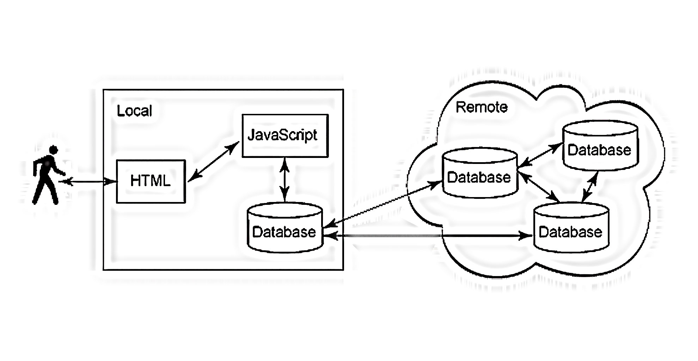
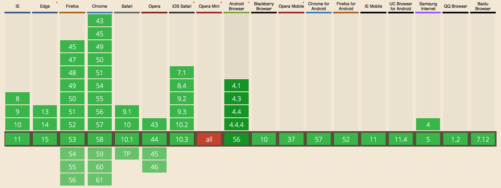
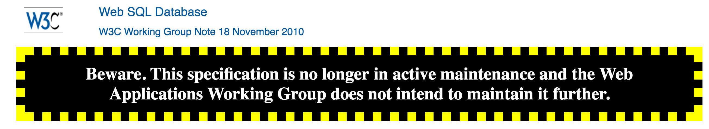
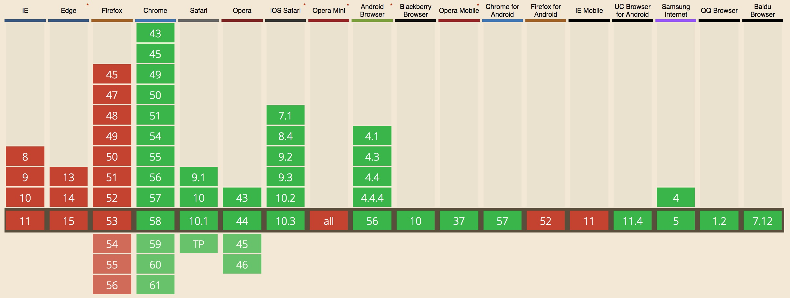
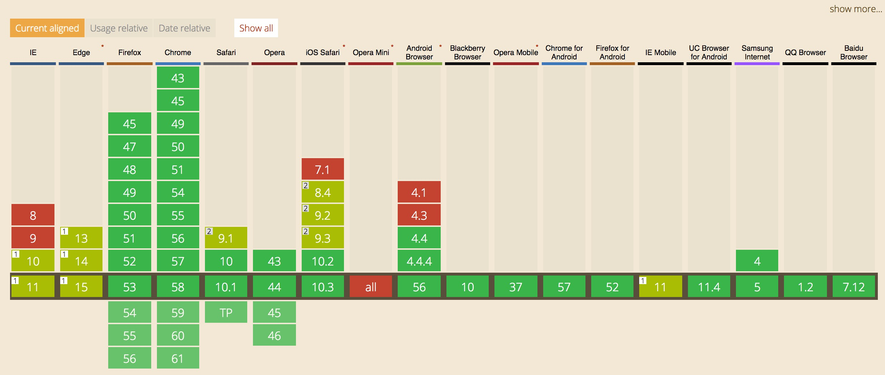
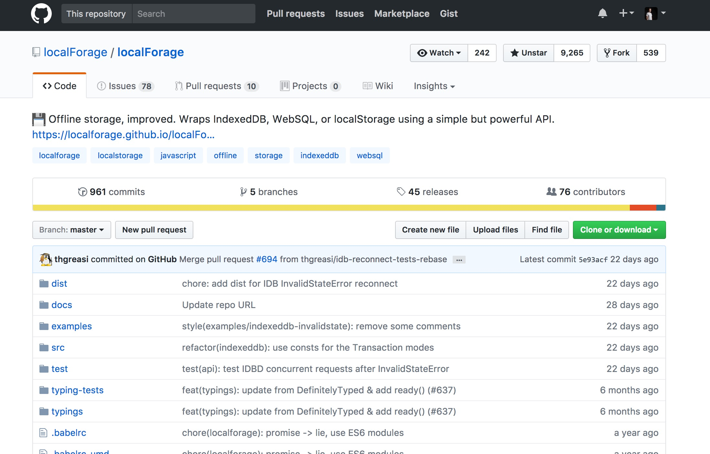

Find me on Gmail / Twitter / Github / Stackoverflow / Linkedin / Medium
@mhadaily
But Why Offline Storage?
Keep Organized!
...instant retrieval of structured data
Performance!
Reduce network requests
avoid unneeded data download
...mobile data is not cheap!
Server Outage
Ok, What are the options?
Static Assets
Application Cache (Part of Service Workers) "cache-manifest"
Dynamic Content ✔
Web Storage APIs
Web SQL Database
IndexedDB
File System APIs
File APIs
Wrappers & Polyfills!
Goal

‘Offlining’ Dynamic Data
Web Storage / localStorage & sessionStorage
Pros
Key / value(strings) pairs
Persistent on page reloads
Avoids HTTP overhead of cookies
Great for storing user preferences
Cons
5 MB (but really only 2.5 MB)
Performance (Synchronous)
No Support for Web Worker
Web Storage Compatibility

Web Storage Sample Code
<script>localStorage.setItem('User',JSON.stringify({fn:'MJ',id:10}));JSON.parse(localStorage.getItem('User')); // ObjectlocalStorage.removeItem('User');localStorage.length // num of items storedlocalStorage.key(0); // 'User'localStorage.clear();<script>
WebSQL
Pros
Basically wrapper around SQLite
asynchronous(Callback)
Transaction-oriented
Put processing (sorting, filtering, etc.) on client
Cons
~50MB limit of data storage
No support for Web Worker
Depreciated!!

<script> var db = openDatabase('myDB', '1.0', 'Web SQL DB', 2 * 1024 * 1024, function(db){}); db.transaction(function (tx) { tx.executeSql("CREATE TABLE IF NOT EXISTS..." // SQL statement. [], // Parameter array. function onTXSuccess(transaction, results) { ... }, //opt_successCallback function onTXError(transaction, error) { ... } //opt_errorCallback ); }); var taskText = 'buy groceries'; tx.executeSql( 'INSERT INTO todo(task, added_on) VALUES (?,?)', [taskText, new Date()], renderFunc, onError);</script>
Web SQL Compatibility

IndexedDB
Pros (NoSQLDB)
Object based data store
“No limit”, can ask user for more space
For the browser and for Web Workers
Asynchronous API
Transaction-oriented
Cons
Relatively Complex API
Buggy Implementation in Safari < v10.1!
Indexed Database API 2.0 is almost there https://hacks.mozilla.org/2016/10/whats-new-in-indexeddb-2-0/
IndexedDB Compatibility

<script>var open = indexedDB.open("MyDatabase", 1);open.onupgradeneeded = function() { // Create the schema var db = open.result; var store = db.createObjectStore("MyObjectStore", {keyPath: "id"}); var index = store.createIndex("NameIndex", ["name.last", "name.first"]);};open.onsuccess = function() { var db = open.result; // Start a new transaction var tx = db.transaction("MyObjectStore", "readwrite"); var store = tx.objectStore("MyObjectStore"); var index = store.index("NameIndex"); store.put({id: 1, name: {first: "Majid", last: "Hajian"}, age: 30}); // Add some data var getMajid = store.get(1); // Query the data getMajid.onsuccess = function() { console.log(getMajid.result.name.first);}; // => "Majid" tx.oncomplete = function() { // Close the db when the transaction is done db.close(); };}</script>
File System API (Only Chrome) / File API
Focus:
Asynchronous (callback-based)
For the browser and for Web Workers
Large files
Binary content
Source
https://w3c.github.io/FileAPI/
https://www.w3.org/TR/file-system-api/
https://github.com/WICG/writable-files
https://wicg.github.io/entries-api/
https://github.com/eligrey/FileSaver.js
Just keep an eye on them but they are not going to be in place soon!
Native JS objects,serialized to JSON, ArrayBuffers, Blobs, and TypedArrays.
TypeScript
Front-end Frameworks

LocalForage Sample Code
npm install localforagelocalforage.setItem('key', 'value', function (err) {// if err is non-null, we got an errorlocalforage.getItem('key', function (err, value) {// if err is non-null, we got an error. otherwise, value is the value});});
PouchDB
~46KB (gzipped)
Basically a CoudDb in Browser
Easy to sync
Well-supported browsers
underhood IndexedDB and fallback to websql
Cordova/PhoneGap, NW.js, Electron, and Chrome apps
Angular, React, Ember, Backbone, Vue.js and ...
Fully support ES6 and ES7 (Async/Await) and es5-shim for legacy environment


 @mhadaily
@mhadaily